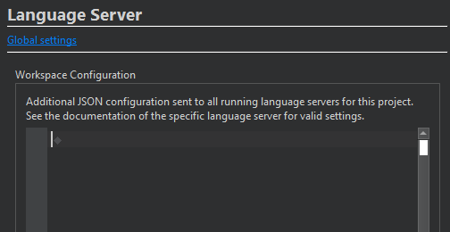

Configure language server workspace
The language client sends the contents of the Workspace Configuration field as a JSON file to all language servers that have files open that belong to the project. The contents of the JSON file must be valid JSON. The available settings depend on the language server.
To configure the language server workspace for the current project:
- Go to Projects > Project Settings > Language Server.

- In Workspace Configuration, specify language server settings using valid JSON format.
To add language servers and change their preferences, go to Global settings.
See also How To: Manage Language Servers, Language Servers, and Configuring Projects.